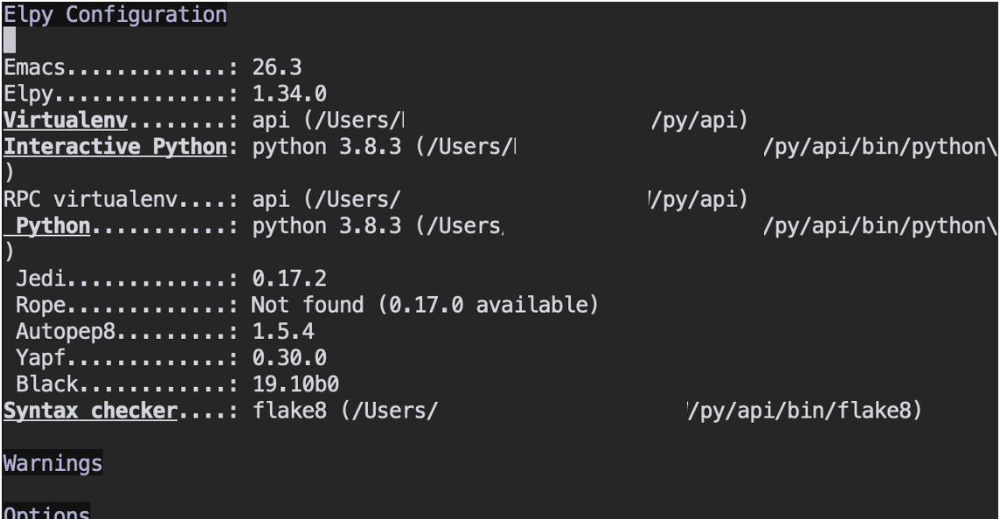

Table of Contents
1 はじめに
私は以前、elpyの導入に失敗しています。elpyはemacsをPythonの統合環境(IDE)化するパッケージです。
原因がよくわかりませんが、どう頑張っても動かなかったのです。3日くらい試行錯誤して断念しました。実力も無いのにemacsを使うのが悪いという話もありますが、指が慣れてしまっているので他の環境には移れないのです。
最近Pythonに再入門してから、普通のエディタとしてemacsを使ってPythonのコードを書いてきました。IDEの自動補完機能を使う同僚を横目で見て、いつもうらやましく思っていました。そこで、一念発起して、再度elpyの導入にチャレンジしました。
この記事はReal Pythonの導入記事を 丸写し 参考にしています。
2 emacsの嫌いなところ
いきなりですが、emacsの嫌いなところです。emacs使いはいろいろな意味で上級者が多いです。初級者向けの導入記事はあまり無いか、あっても高度すぎて理解できないことがよくあります。
設定ファイルの.emacs.d/init.elを書き換える時はいつも緊張します。導入記事のアドバイスの通り書いているはずなのに、意味不明のエラーをたくさん吐いて、emacsが使い物にならなくなるのです。
emacs使いはきっと マゾ 辛いことが好きなんだと思います。
そんな訳で、emacsではいろいろな冒険ができないところが嫌いです。現状維持圧力を感じます。この10年でした冒険と言えば、org-modeを使い始めたことと、今回のelpy導入くらいです。
3 elpyとは
話を戻して、elpyについてです。elpyはEmacs Python Development Environmentのことで、次のようなPythonのIDE機能を提供します。
- 自動インデント(これは標準のpython-modeにもある)
- シンタックスハイライト
- 自動補完
- シンタックスチェック
- Python REPL統合
- 仮想環境サポート
更に、elpyと連動して動くパッケージを入れると、あなたのemacsがそのへんのIDEに負けない立派なIDEに変身します。
4 elpyの導入
4.1 melpaリポジトリの追加
早速ですが、例のinit.elを編集します。 elpyはmelpaとかいうemacsのパッケージリポジトリから持ってくるため、emacsがmelpaを見に行くようにしなくてはいけません。この部分の私の設定は次のようになっています。
(require 'package)
(setq package-archives
'(("gnu" . "http://elpa.gnu.org/packages/")
("melpa" . "http://melpa.org/packages/")
("org" . "http://orgmode.org/elpa/")))
(package-initialize)
(when (not package-archive-contents)
(package-refresh-contents))
大事なのはこの部分です。
("melpa" . "http://melpa.org/packages/")
4.2 パッケージを読み込む
次は、melpa他から必要なパッケージを持ってきます。 このやり方はReal Pythonからいただいてきたのですが、なかなか良いです。 まずmyPackagesとして必要なパッケージを定義しておいて、その後インストールされていなかったらインストールまで自動でやってくれます。
(defvar myPackages
'(better-defaults
elpy
flycheck ;; On the fly syntax checking
py-autopep8 ;; Run autopep8 on save
blacken ;; Black formatting on save
material-theme
)
)
(mapc #'(lambda (package)
(unless (package-installed-p package)
(package-install package)))
myPackages)
elpyの他にいろいろなパッケージを読んでいますが、簡単に説明します。
- better-defaults - emacsのデフォルト設定でいまいちなところを改善してくれるようです。今のところ、何が変わったのかわかりませんが、なんとなく入れておきます。
- flycheck - オンザフライで文法チェックをしてくれます
- py-autopep8 - セーブ時にpep8準拠チェックをして勝手に修正してくれます
- blacken - セーブ時にBlackのフォーマットチェックをして勝手に修正してくれます
- material-theme - このテーマはなかなかいい感じだったので、これまで使っていたものから乗り換えました
4.3 パッケージをactivateする
そして、パッケージを有効化します。 こちらもReal Pythonから念仏のように写経しただけですが、うまく動いてくれたようです。なお、ここでは一気に全て入れていますが、エラーが出るとどこが悪いのかわからなくなるので、少しずつ動かしながら足していくのがよいと思います。
(load-theme 'material t) ;; elpy (elpy-enable) (setq elpy-rpc-virtualenv-path 'current) ;; Flycheck (when (require 'flycheck nil t) (setq elpy-modules (delq 'elpy-module-flymake elpy-modules)) (add-hook 'elpy-mode-hook 'flycheck-mode)) ;; autopep8 (require 'py-autopep8) (add-hook 'elpy-mode-hook 'py-autopep8-enable-on-save)
1カ所注意があります。私は人気のvirtualenvではなくてvenvを使っているので、最初出ていたエラーメッセージに従って、次のようにしました。もし副作用があったらごめんなさい。
(setq elpy-rpc-virtualenv-path 'current)
そしてこれをしたことで、~/.local/binを環境変数PATHに入れるよう言われたので、~/.zshrc(macOSです)を修正しました。
export PATH="$HOME/.local/bin:$PYENV_ROOT/bin:$PATH"
4.4 pipでインストールするパッケージを持ってくる
melpaから持ってこられないパッケージをpipを使って持ってきます。
pip3 install jedi flake8 autopep8 yapf black
こんな感じだったと思います。実際は一つずつインストールしたので、historyを見て書きました。
4.5 確認する
pythonの.pyファイルを開いてM-x elpy-configと入れ、リターンキーを押します。 
今回はうまくいきました。持ってきたパッケージは一通り認識されていました。
5 終わりに
上でも挙げたReal Pythonの導入記事はemacsの説明から始まるので、うっかり見落とすところでしたが、さんざん検索した中で一番役に立った記事でした。初級者向けのemacs記事は少ないのでありがたいです。Real Pythonさん、どうもありがとうございます。